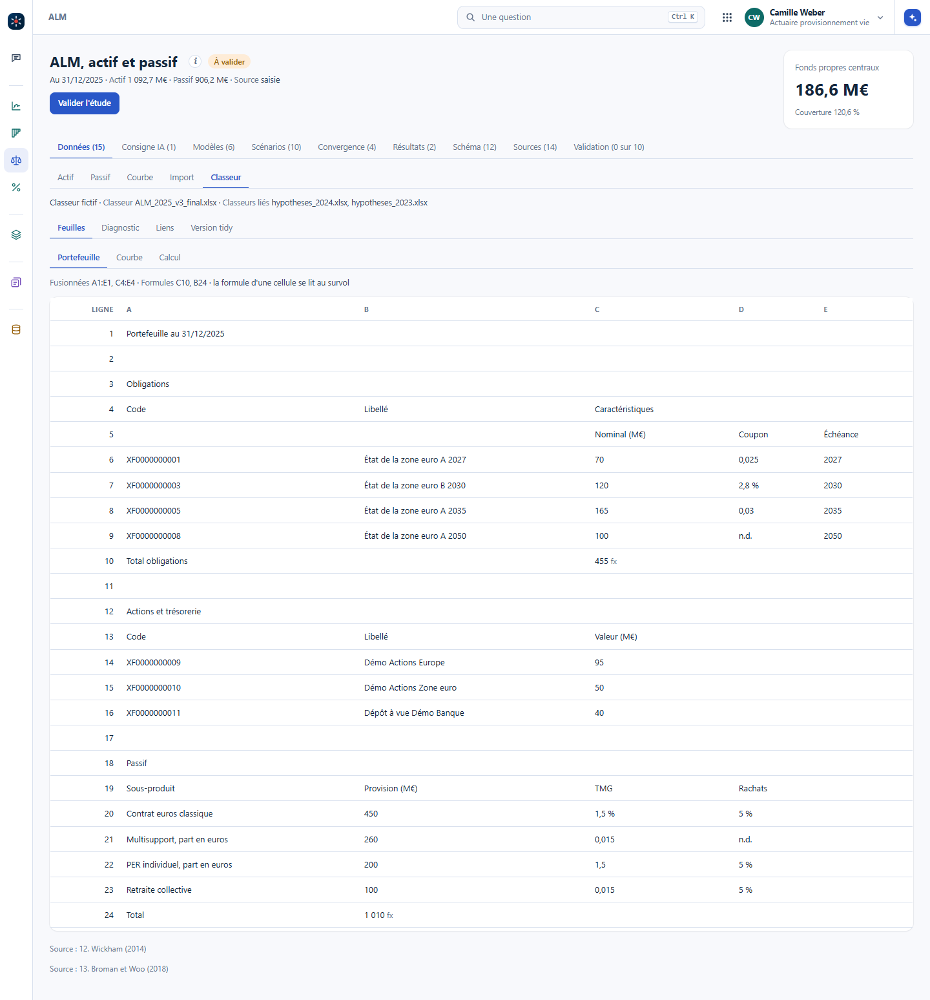
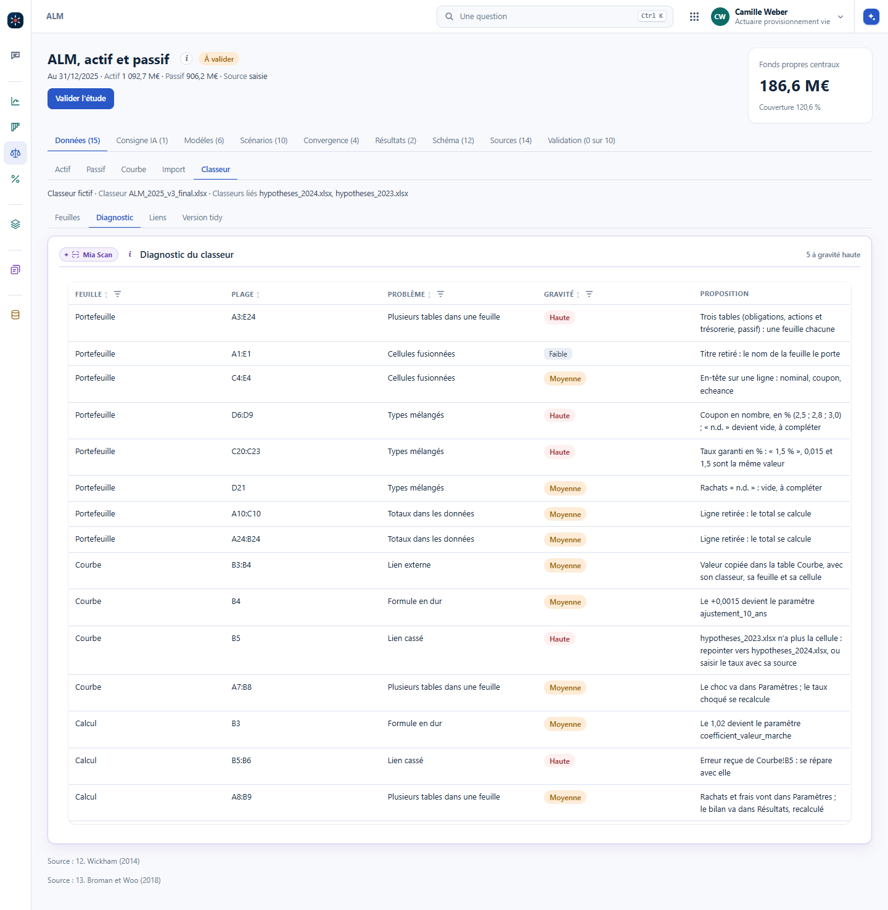
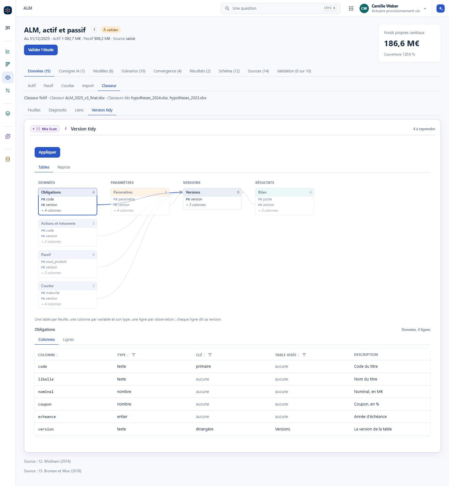
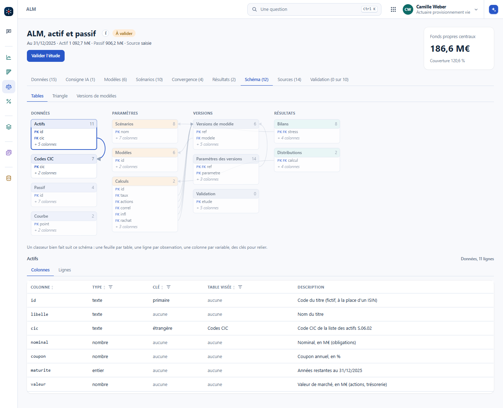
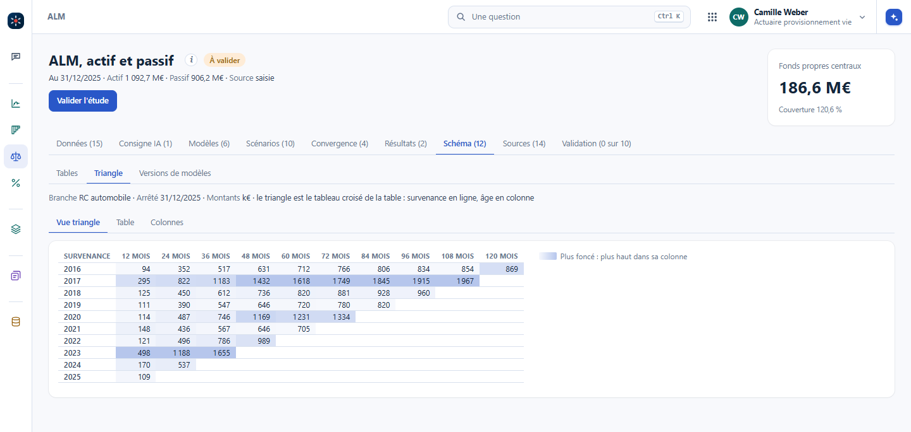
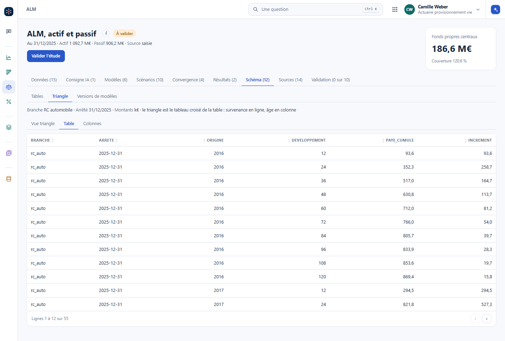

Dans beaucoup d'équipes, le classeur Excel ressemble à ceci : des formules dans tous les sens, plusieurs fichiers liés dont les liens finissent cassés, plusieurs tableaux dans un même onglet. Ce n'est même pas une question d'IA. C'est une question de structure : les données, les paramètres, les résultats et les versions, chacun à sa place. Le chapitre précédent a posé le grain et le dictionnaire ; celui-ci les applique au classeur.
Hadley Wickham, l'auteur de ggplot2 et du tidyverse, ouvre son article Tidy Data (2014) sur une phrase reprise de Tolstoï. Anna Karénine commence par « les familles heureuses se ressemblent toutes ; les familles malheureuses le sont chacune à leur façon ». Pour les données, c'est pareil : les données propres sont toutes propres de la même façon, les données sales sont sales chacune à leur façon. Il n'y a donc qu'une forme à apprendre, et Broman et Woo (2018) en ont fait des règles pour le tableur.
Pas de deuxième tableau sous le premier, pas de bloc « hypothèses » à droite des données.
La première ligne porte les noms des variables, et rien d'autre ne sert d'en-tête.
Un coupon s'écrit partout en pourcentage, ou partout en décimal, jamais les deux.
Un total se calcule, il ne s'écrit pas dans la table. Un paramètre a sa table, pas un « + 0,0015 » dans une formule.
Avec ces règles, tout le monde travaille mieux : le collègue qui reprend le classeur, le contrôleur qui le relit, et l'IA qui doit le lire avant de proposer quoi que ce soit.
Dans l'ALM de Vision, l'onglet Données a une partie Classeur : un classeur fictif, ALM_2025_v3_final.xlsx, lié à deux autres classeurs d'hypothèses. Il montre les feuilles telles qu'Excel les montre, avec les cellules qui calculent et leurs formules. Mia Scan, la brique qui lit les documents, le lit cellule par cellule et rend un diagnostic : plusieurs tables dans une feuille, des cellules fusionnées, des types mélangés, des totaux dans les données, un lien vers un autre classeur, un lien cassé, une formule en dur. Chaque constat a sa plage, sa gravité et une proposition.


Dans Vision : #/alm?ong=donnees&part=classeur, au poste d'actuaire provisionnement vie, puis Feuilles, Diagnostic, Liens et Version tidy. La lecture du classeur est écrite d'avance pour la formation, et le « i » du bloc le dit.
La version propre range le même contenu en tables : les données (obligations, actions et trésorerie, passif, courbe), les paramètres en format long (un paramètre, sa valeur, son unité, sa description), les résultats, et une table des versions à laquelle chaque ligne se rattache. « Appliquer », avec un motif obligatoire, reprend dans l'ALM ce qui s'y range. La reprise dit, ligne par ligne, l'avant, l'après, et pourquoi le reste n'est pas repris : un résultat ne se reprend pas, il se recalcule.
Le schéma relationnel, lui, ne s'invente pas en réunion : c'est le métier de la DSI, de celui qui construit la base. On le lit, on s'y range. Des clés disent les relations : un actif pointe vers son code CIC, un calcul vers les versions des modèles qu'il emploie. L'ALM, le taux servi, la RC professionnelle et le transport ont chacun un onglet Schéma : on clique une table, on voit ses colonnes, leur type et leur clé, puis ses lignes. Un classeur bien fait, c'est ce schéma.


Dans Vision : #/alm?ong=schema. Le même onglet existe au taux servi, à la RC professionnelle et au transport.
Ce n'est pas évident, et c'est l'exemple qui le montre le mieux. Le triangle de sinistralité, tel qu'on le regarde, n'est pas structuré : l'année de survenance en ligne, l'âge en colonne, les montants dans les cases. C'est la vue d'une table qui a une ligne par survenance et par âge, avec ses colonnes branche, arrêté, origine, développement et montant. Le triangle est le tableau croisé de cette table.


Le triangle est donc le front-end, un affichage : une image, graphique, de la façon dont les sinistres se développent. La table, et mieux encore le développement de chaque sinistre, c'est le back-end : le découpage du chapitre Base de données, API, interface.
Dans Vision : #/alm?ong=schema&sch=triangle, puis Vue triangle et Table. Versionner les modèles et les résultats suit la même idée, même si ce n'est pas toujours intuitif : le chapitre Versionner les résultats le montre.
On veut ajouter la branche RC générale à côté de la RC automobile. Que faut-il faire dans la vue triangle, et que faut-il faire dans la table ?
Dans la vue, un deuxième triangle, souvent une feuille de plus, et des formules à recopier. Dans la table, des lignes de plus avec branche = rc_generale, et rien d'autre ne change : le triangle de chaque branche est le même tableau croisé, filtré sur sa branche. Comparer deux arrêtés se fait de la même façon, avec la colonne arrêté.
Structuré, le triangle devient une table : année de survenance, année de développement, montant. Mieux encore, la date de survenance et la date de développement ; et pour être très fin, une date de développement par sinistre. Structurer ainsi n'est pas toujours évident, il faut un peu réfléchir.
La règle qui suit est simple : on stocke toujours la donnée granulaire plutôt que l'agrégat. Depuis le développement de chaque sinistre, on peut toujours refaire le triangle global ; depuis le triangle, on ne retrouve jamais les sinistres. Certains disent « pour certains sinistres, on ne peut pas » : on enregistre quand même, puis on explore et on extrapole. Et chaque sinistre porte beaucoup de variables, la garantie, le type de dommage, l'âge du dossier, qui permettent des modèles actuariels bien meilleurs, jusqu'à l'apprentissage automatique qui estime le développement de chaque sinistre à partir de ses caractéristiques (Wüthrich, 2018).
Pourquoi garder le développement de chaque sinistre plutôt que le triangle ?
Parce que le chemin ne va que dans un sens : la somme des sinistres donne le triangle, le triangle ne redonne pas les sinistres. Avec les sinistres, on refait le triangle de n'importe quel découpage (par garantie, par région, par tranche de montant) sans nouvelle extraction, on isole les graves, et on peut estimer le développement de chaque dossier à partir de ses caractéristiques. Avec le triangle seul, tout cela est perdu au moment de l'agrégation.
Tout le monde a voulu un jour utiliser l'IA sur ses fichiers Excel, ou sur ses présentations, et pendant longtemps c'est resté compliqué. Ce qui arrive maintenant le dit bien : les assistants du tableur, celui d'Excel comme Gemini dans Google Sheets, demandent d'abord une plage, et cette plage est le plus souvent un tableau. Ensuite seulement, on pose ses questions.
Autrement dit, même pour l'IA, un classeur mal structuré est difficile à aider. C'est la règle qu'on répète en data science, garbage in, garbage out, et elle vaut pour un classeur comme pour un modèle : mal structuré, chaque analyse est une galère et rien ne s'automatise ; bien structuré, les requêtes et les analyses viennent facilement.
Un onglet de plus, qu'on appelle Documentation ou Dictionnaire, décrit chaque onglet et chaque variable : ce que représente une ligne, ce que veut dire chaque colonne, dans quelle unité. Pour l'IA, c'est ce qui change tout : elle comprend le classeur et va chercher la bonne donnée tout de suite. C'est le dictionnaire de données, posé dans le classeur lui-même.
L'IA peut aussi faire une partie du rangement : analyser chaque onglet, finement, et proposer sa structure, comme le diagnostic plus haut. Le pivot ne change pas : arriver à des données bien structurées. Ce travail d'organisation se fait une fois ; ensuite, on automatise.
La même lecture sert ailleurs. Les notaires reçoivent beaucoup d'actes anciens, mal faits, avec des tableaux et du texte manuscrit. L'IA peut aider à analyser leur contenu, à extraire les tableaux et à récupérer l'information, chaque valeur gardant le renvoi à la page d'où elle vient. C'est le travail de Mia Scan sur un document, et c'est un service à proposer. Vision n'a pas encore d'écran pour ce cas.
Prenez le classeur de votre dernier arrêté. Comptez les feuilles qui portent plus d'une table, les cellules fusionnées, les totaux écrits dans les données, et les liens vers d'autres fichiers. Lequel de ces liens est encore valide ?
Une feuille de synthèse qui mêle données, paramètres et résultats, un lien vers le classeur de l'an dernier qui pointe encore vers un fichier déplacé, et un paramètre écrit en dur dans une formule. Ce sont les trois premiers constats que le diagnostic de Vision classe en gravité haute ou moyenne.